True Brick
Introducing the ultimate fusion of minimalism and exclusivity: the Supreme Brick. This is not just a toy—it's a statement. Featuring the iconic Supreme logo boldly imprinted on an authentic LEGO brick, this collector’s item redefines luxury in simplicity. Whether you're an aficionado of rare memorabilia or someone who appreciates the unique blend of pop culture and streetwear, the Supreme Brick commands attention and sparks conversation. Priced to reflect its status, this piece isn't just about building structures; it's about building a legacy. Secure yours now and own a symbol of style that transforms the ordinary into the extraordinary.